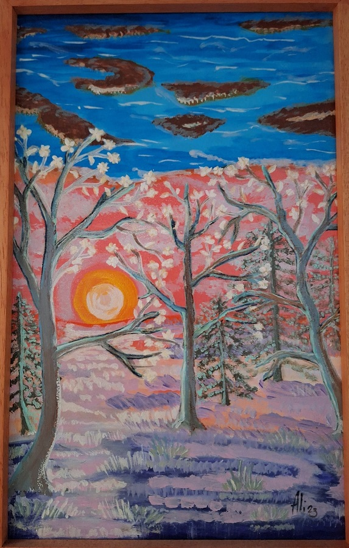

Bosque Zen
DM 26x38cm – Acrílico/ Año 2024
Bosque zen nos introduce en un espacio de contemplación donde
la fuerza del sol enmarcado por la desnudez de los árboles,
abre un horizonte de calma y plenitud.
Los colores vibran entre rosados, lilas y azules,
evocando entre lo efímero y lo eterno.
La obra propone un estado de silencio interior,
como un jardín meditativo en el que la naturaleza revela su equilibrio sagrado.
Un lugar donde el tiempo se suspende y sólo queda el pulso de la naturaleza
resonando en el interior.
Jardin Zen
DM 26x38cm – Acrílico / Año 2024
Jardín zen nace de la contemplación de los nenúfares de Monet
pero se abre hacia un lenguaje propio donde el color y
la forma vibran con intensidad y la calma se vuelve presencia viva.
Los lotos flotan como símbolos de pureza y renacimiento en un espacio
que invita a la meditación y a la pausa interior.
Esta obra es un puente entre el legado impresionista y la búsqueda contemporánea
de armonía espiritual.
El Jardin De Los Deseos
DM 26x38cm – Acrílico/ Año 2025
“Cuando era niña atrapaba los panaderos y pedía deseos y los hacía volar alto”.
Los panaderos (diente de león) como portadores de sueños y la
inocencia del acto de pedir y soltar evoca la infancia y los rituales simples:
atrapar un panadero, soplar con fuerza y dejar que el viento lleve nuestros anhelos.
La obra convierte ese gesto inocente en un paisaje interior donde los sueños flotan,
se dispersan y germinan en el aire. Es un homenaje a la esperanza,
a la ligereza de lo efímero y a la fe en que cada deseo puede volar alto y hacerse realidad.